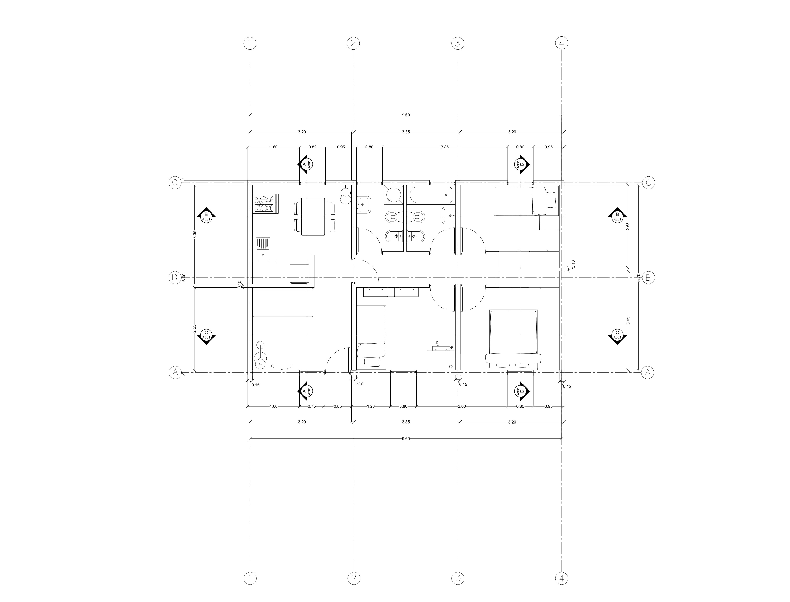
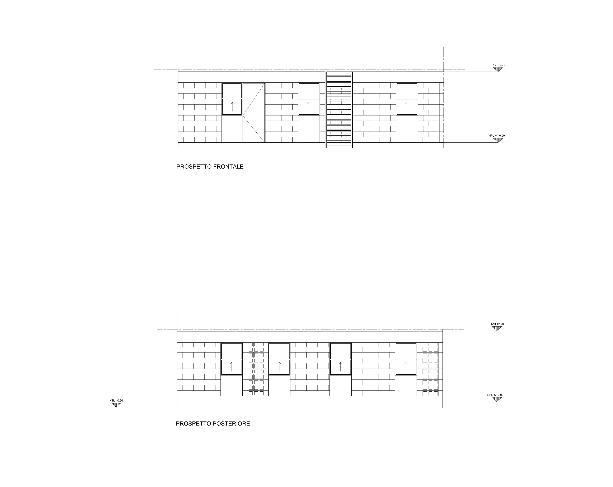
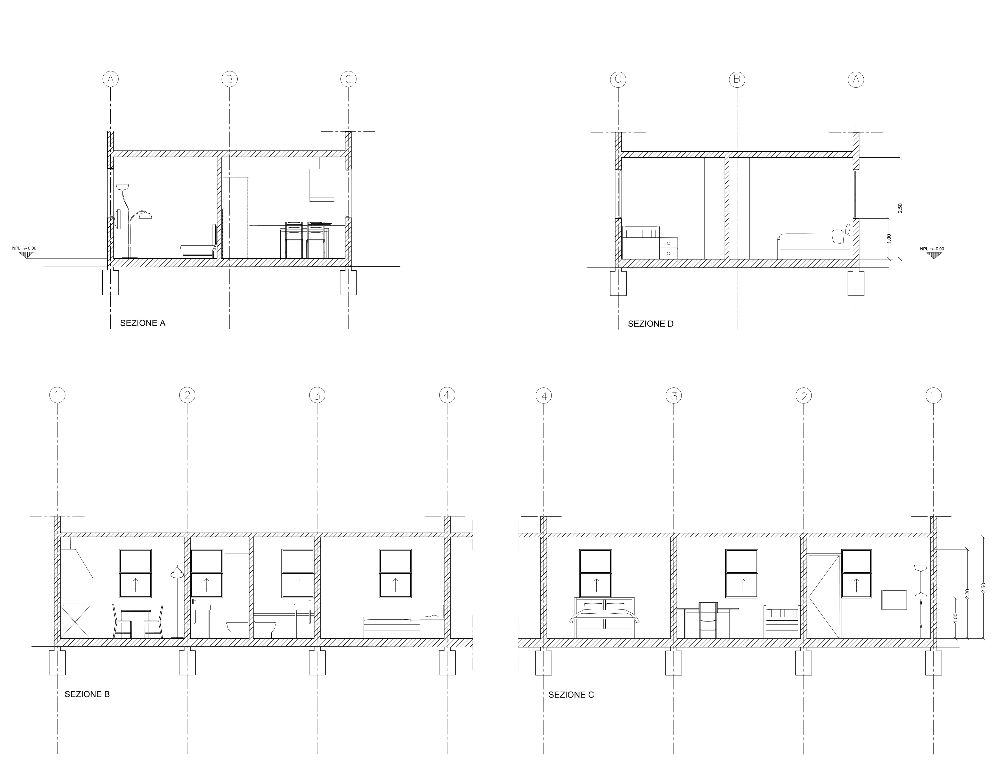

PROPOSTA D'AMPLIAMENTO
Nell’ampliare l’appartamento simplex di Monterrey sono state fatte alcune modiche che nella pratica sono consistite nell’aggiunta di un bagno, di una camera da letto e di un piccolo studio garantendo inoltre uno spazio maggiore a soggiorno e cucina. Qui di seguito sono esaminabili le tavole relative.
PIANTA
PROSPETTI
SEZIONI
 Sito sviluppato per il corso di Strumenti e Metodi del progetto tenuto dal professor Marco Ferrara.
Realizzato da Giovanni Sbaffo e Kunhao Zhai.